Doctor Who na Veia!
Do quê se trata? Onde Assistir? Porquê assistir?
Doctor Who é o melhor seriado que existe, na minha opinião. Se trata de um alien de 2 corações que viaja pelo espaço e tempo, sempre acompanhado por 1 ou mais humanos que ele encontra. O 1° seriado do Doctor Who não pode ser encontrado em servidores brasileiros (de 1963 a 1989), o 2° seriado (de 2005 até atualidade) pode ser encontrado na Disney +. Eu assisto porque sinto que estou viajando junto com ele, eu sinto que eu estou lá como um deles, é incrível...
Temporadas Clássicas
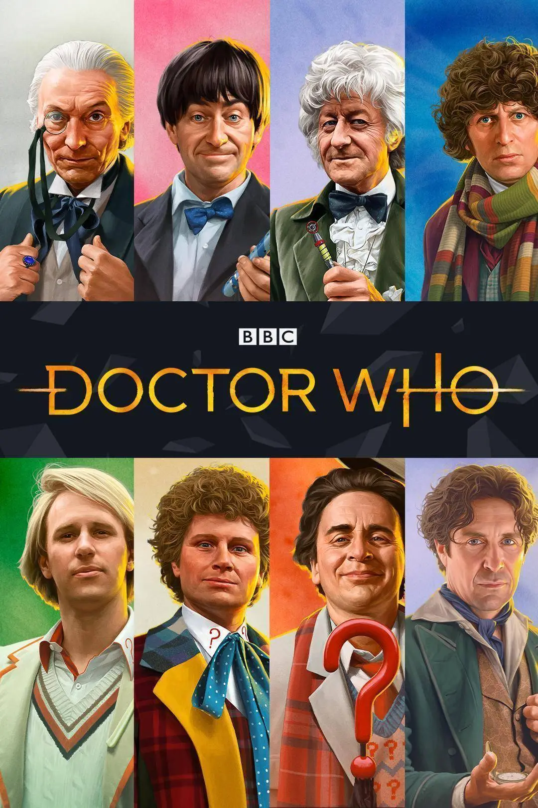
Doctor Who 1963
A série original que iniciou tudo. O Doutor e seus companheiros viajam através do tempo e espaço em uma nave chamada TARDIS, enfrentando alienígenas perigosos e vivendo aventuras épicas.
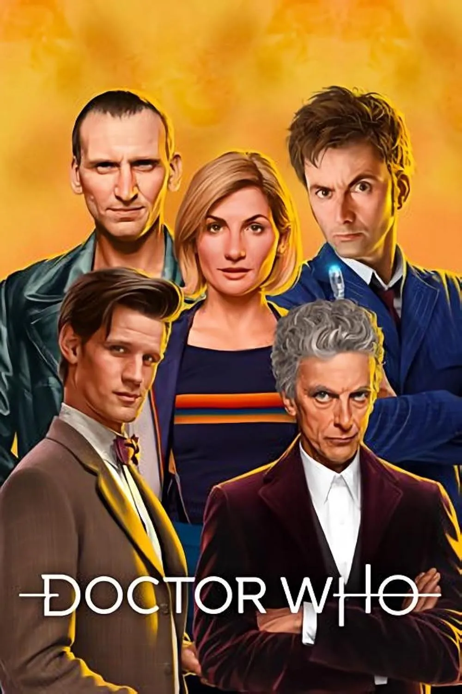
Doctor Who 2005
O ressurgimento da série com novo visual e efeitos modernos. O Nono Doutor conhece Rose Tyler e viajam juntos descobrindo mistérios intergalácticos e ameaças à humanidade.
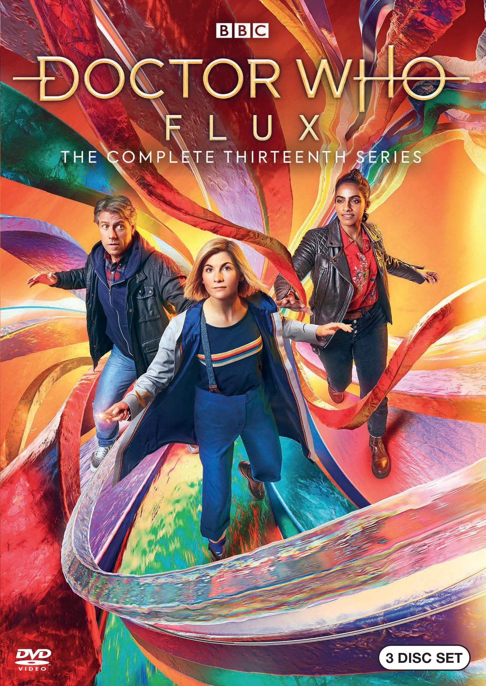
Doctor Who Flux
Uma série de seis episódios conectados onde o Doutor enfrenta forças cataclísmicas que ameaçam destruir universos inteiros, revelando mistérios antigos e transformadores.
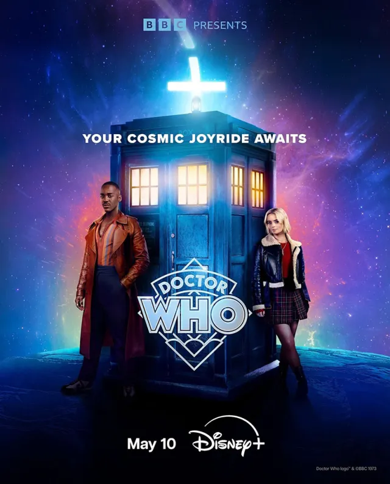
Doctor Who 2024
A série de 2024 marca um novo capítulo com o Doutor Ncuti Gatwa em um novo corpo. Aventuras épicas combinam ação futurista com mistérios emocionantes e relacionamentos profundos.
Spin-offs
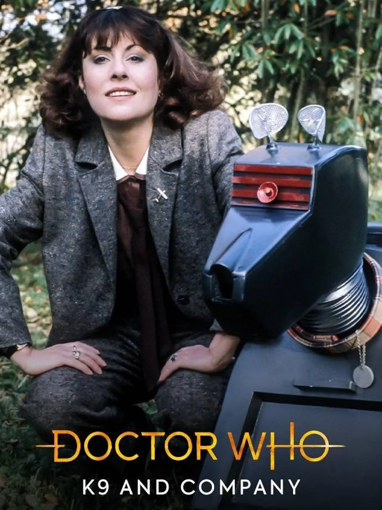
K9 And Company
Sarah Jane Smith e K9 enfrentam mistérios sobrenaturais na Inglaterra. Um spin-off que segue a companheira do Doutor em aventuras independentes cheias de suspense.
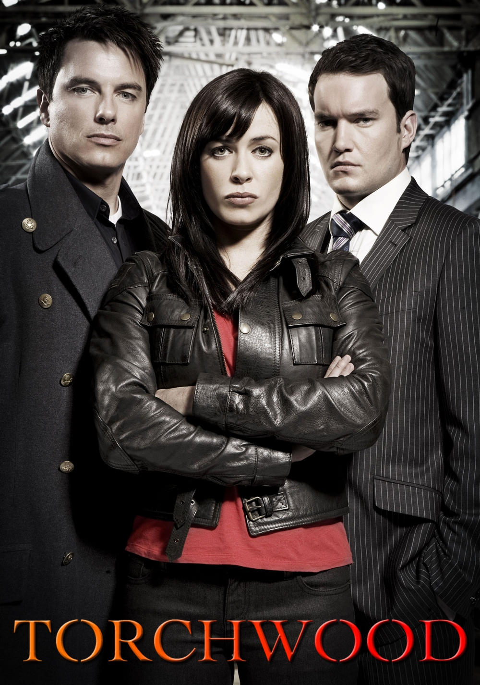
TorchWood
Uma agência clandestina em Cardiff protege a Terra de ameaças extraterrestres. Thriller adulto com drama intenso, mistério e relacionamentos complexos entre personagens magnéticos.
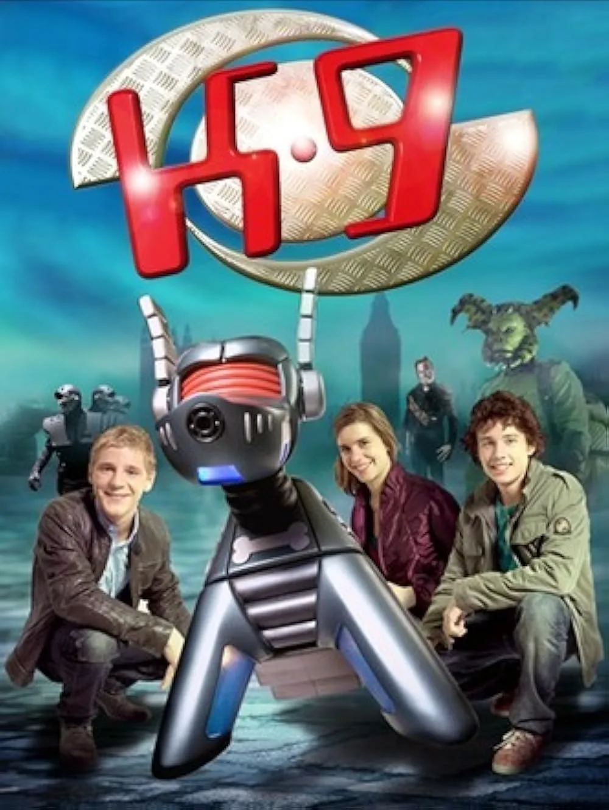
K9
O robô canino lendário ganha sua própria série na Austrália. K9 lidera um time de jovens heróis em uma missão para proteger o mundo de invasões alienígenas e perigos tecnológicos.
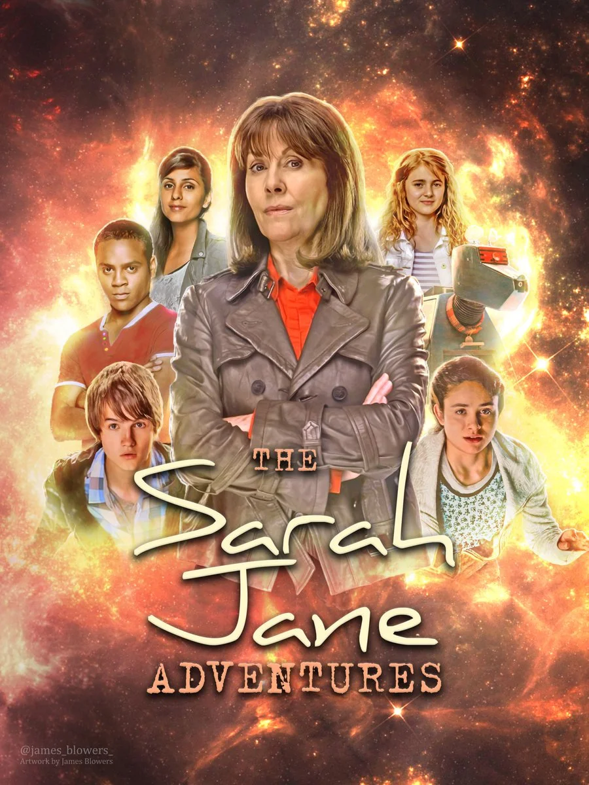
The Sarah Jane Adventures
Sarah Jane Smith, jornalista intrepida, recrutua adolescentes para combater ameaças alien-genas secretamente. Uma série jovem que mescla ação emocionante, humor e aventuras interestelares.
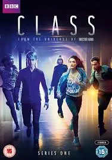
Class
Um grupo de estudantes em uma escola britânica descobre uma fenda temporal que expõe a Terra a criaturas extraterrestres. Drama, ação e mistério envolvem adolescentes em perigos cósmicos.
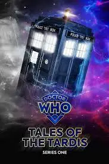
Tales of The Tardis
Uma coleção de histórias especiais que revisita momentos icônicos do Doutor com antigos companheiros. Episódios que reúnem atores clássicos em aventuras nostálgicas e emocionantes.
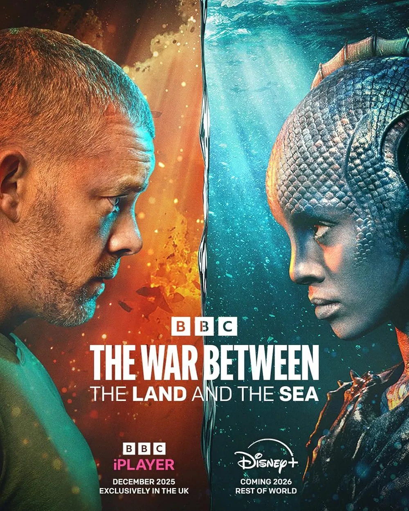
The War Between The Land And The Sea
Uma nova série que explora conflito épico entre civilizações terrestres e aquáticas. Mistura aventura aquática com ficção científica, revelando segredos antigos e ameaças futuras.
Especiais
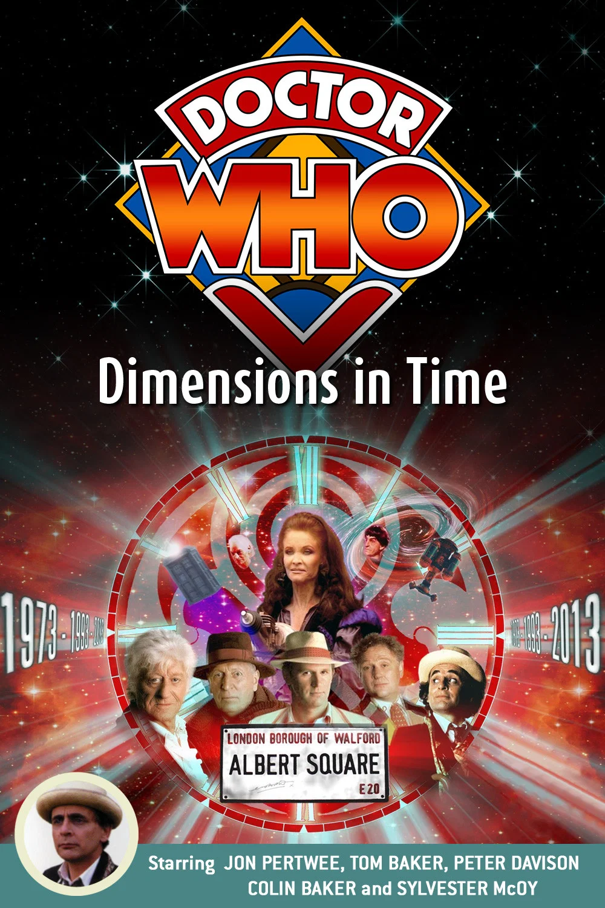
Dimensions in Time
Um especial de 30º aniversário que reúne Doutores passados. A realidade se desintegra e múltiplas versões do Doutor devem trabalhar juntos para salvar o tempo e o espaço.
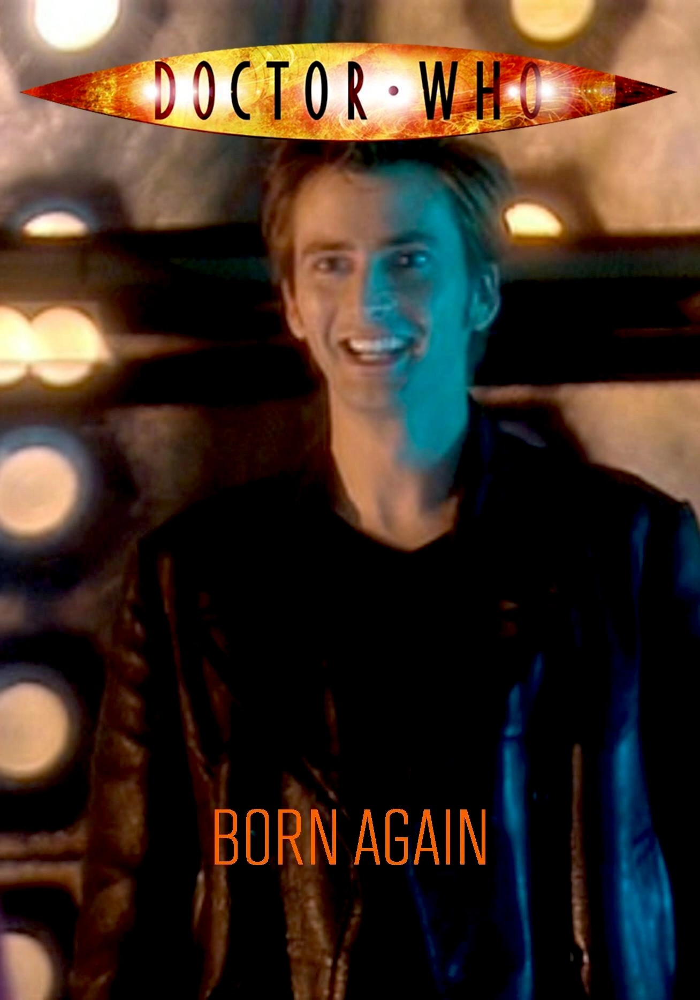
Born Again
O Nono Doutor se vê incapacitado e precisa regenerar em seu Décimo corpo. Uma história de perda e renascimento que marca a transição entre Doutores de forma épica.
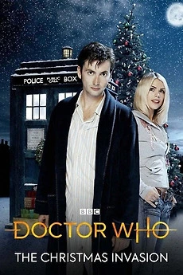
The Christmas Invasion
O novo Décimo Doutor desperta no Natal enquanto naves Sycorax ameaçam conquistar a Terra. Um episódio clássico de festa com drama intergaláctico e heroísmo.
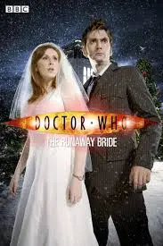
The Runaway Bride
Uma noiva em fuga é arrastada para a TARDIS. Descobrem que sua cerimônia de casamento é parte de um plano alienígena sinistro. Primeira aparição de Donna Noble.
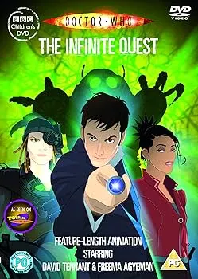
The Infinite Quest
Um episódio animado onde o Doutor e Martha embarcam em uma busca pelo lendário navio Infinite Quest. Aventura espacial com piratas e trama de tesouro.
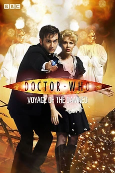
Voyage of the Damned
No Natal, um transatlântico espacial cai e o Doutor luta contra a destruição. Um episódio espetacular com cenas de desastre, heroísmo e sacrifício verdadeiro.
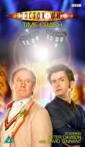
Time Crash
Um mini-episódio do Dia da Criança onde o Décimo Doutor encontra seu antecessor. Uma comemoração nostálgica e divertida com mudanças na TARDIS e risadas.
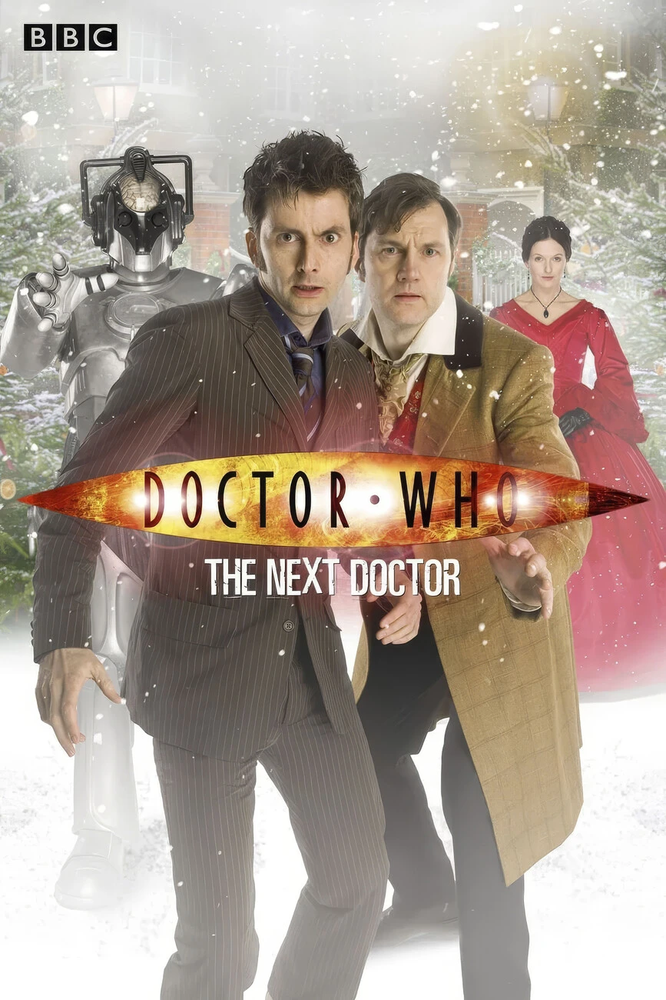
The Next Doctor
Em 1851, o Doutor encontra um homem que acredita ser o próximo Doutor. Vitoriana comovente com máquinas cibernéticas e a questão de quem é realmente o Doutor.
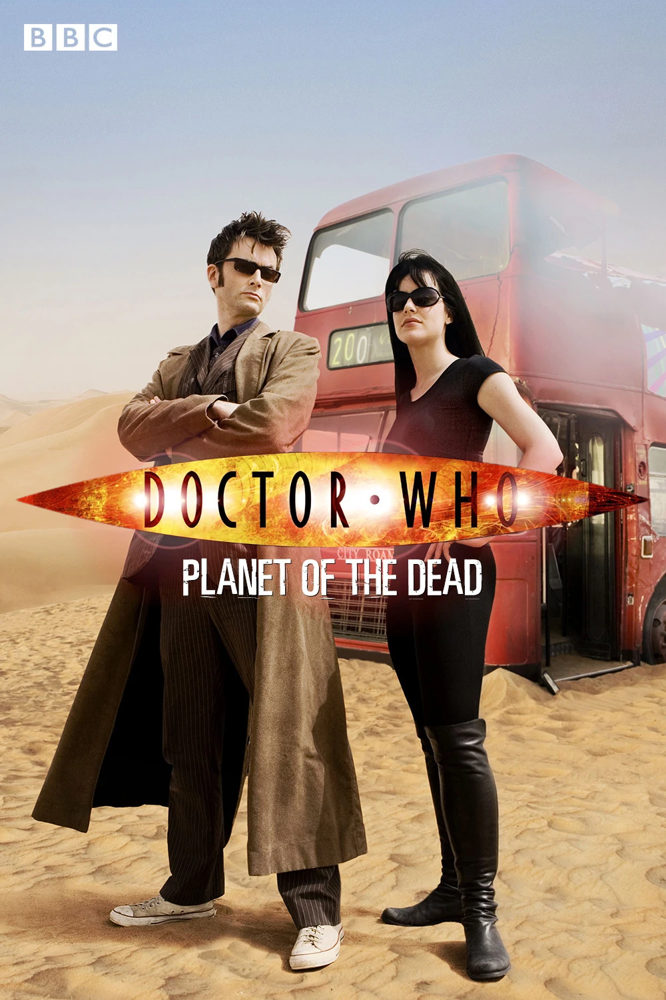
Planet of the Dead
Um ônibus de Christina escapa para um deserto alienígena árido. Aventura insólita com ladra em fuga, criaturas extraterrestres e sobrevivência em planeta hostil.
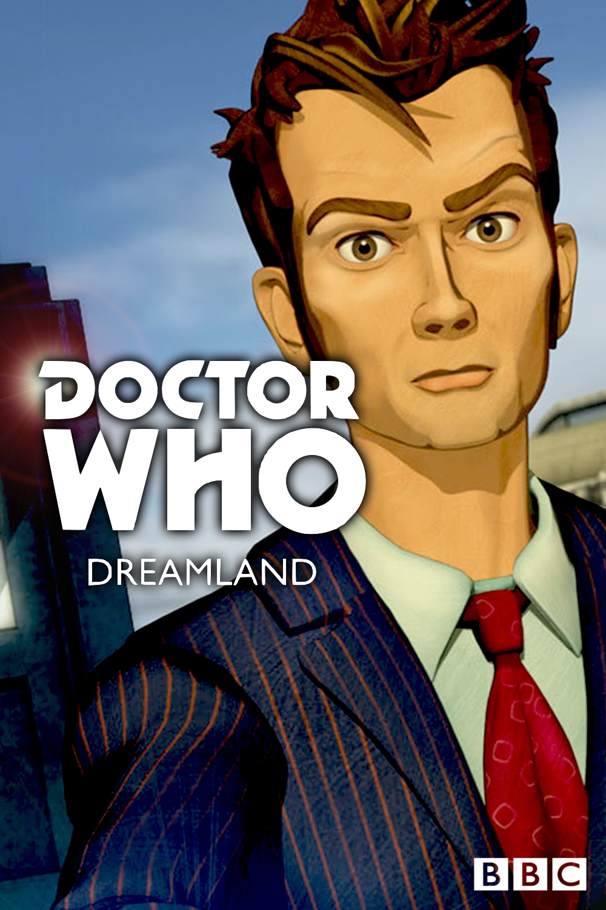
DreamLand
Um episódio animado na New Mexico de 1958 onde o Doutor enfrenta ocupação alienígena encoberta. Mistério da Guerra Fria com aliens capturados e conspirações.
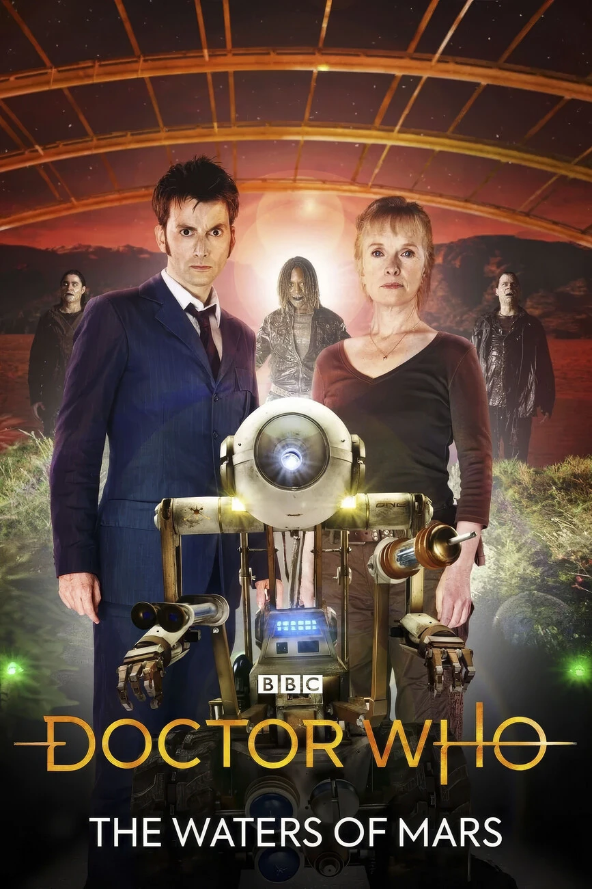
The waters of Mars
Em Marte, uma colônia humana enfrenta criatura mortal nas águas. Um episódio sombrio que explora desespero, sacrifício e o ponto de ruptura do Doutor.
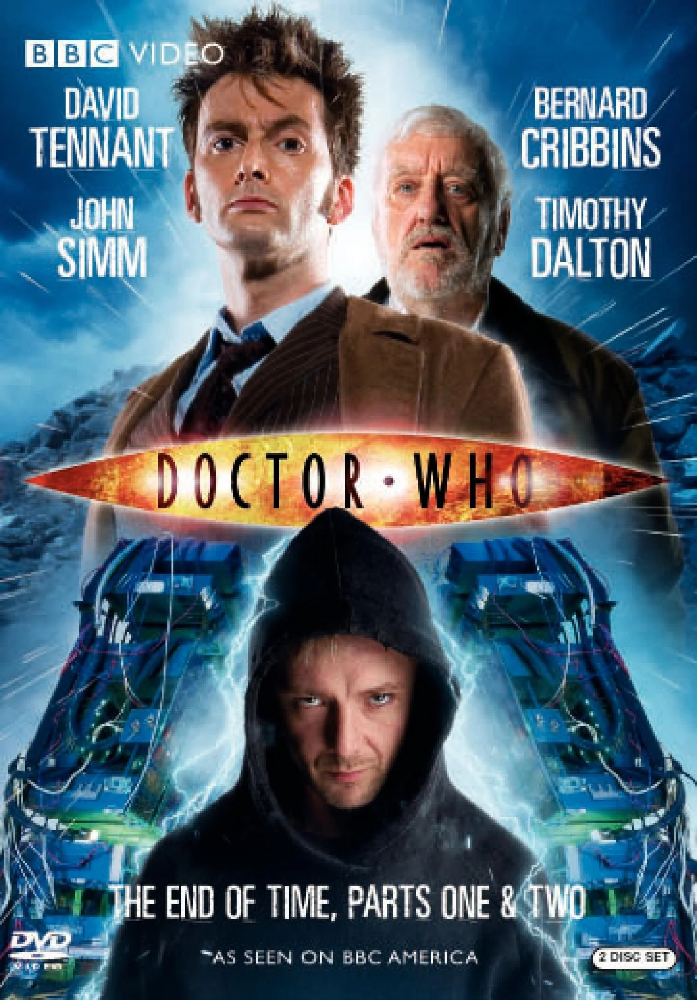
The End of Time
O Décimo Doutor enfrenta seu fim enquanto os Daleks retornam e os Gallifrayanos desafiam o tecido da realidade. Conclusão épica com regeneração e despedida comovente.
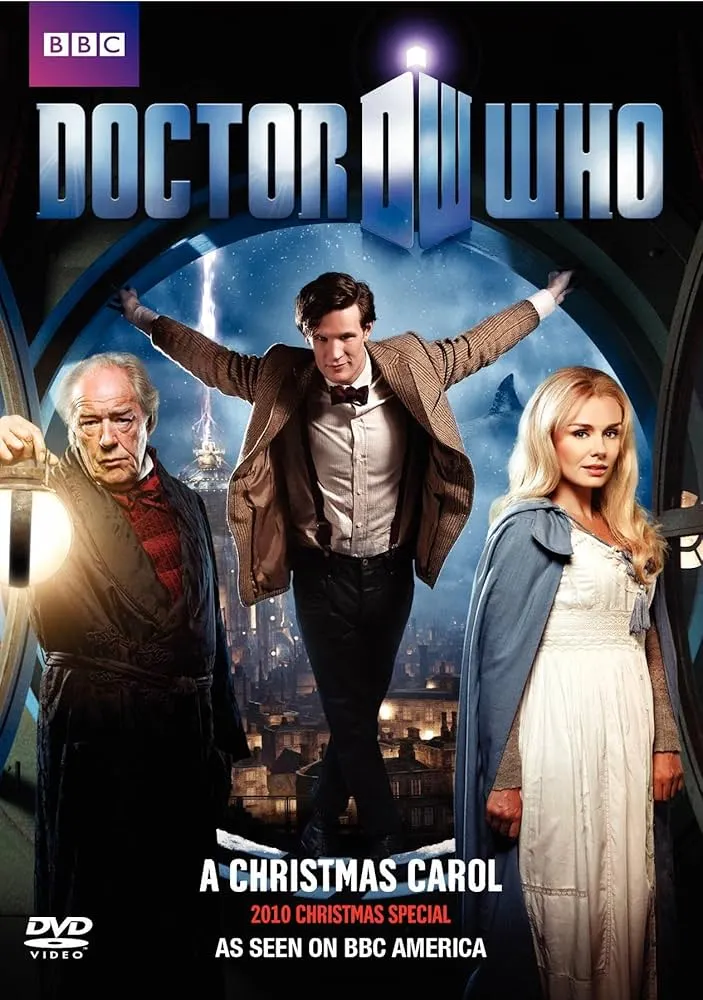
A Christmas Carol
Uma versão futurista e épica da história de Dickens em uma cidade flutuante. O Doutor tenta salvar pessoas durante blizzard de neve criográfica.
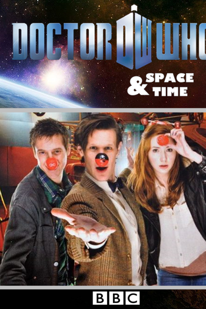
Space and Time
Um mini-episódio do Dia da Criança onde o Doutor e River Song enfrentam paradoxos temporais. Curto mas repleto de humor e ação.
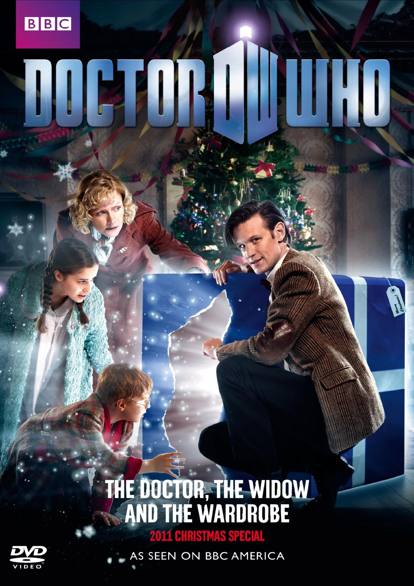
The Doctor, the Widow and the Wardrobe
O Doutor oferece á Viuva Cristmas uma noite de Natal mágica em um mundo fantástico. Especial natalino emotivo com encantamento e família.
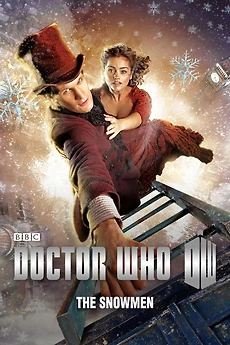
The Snowmen
Na Londres vitoriana, bonecos de neve ganham vida e ameaçam a cidade. O Doutor e Clara enfrentam essa ameaça gelada em adventure natalino sombrio.
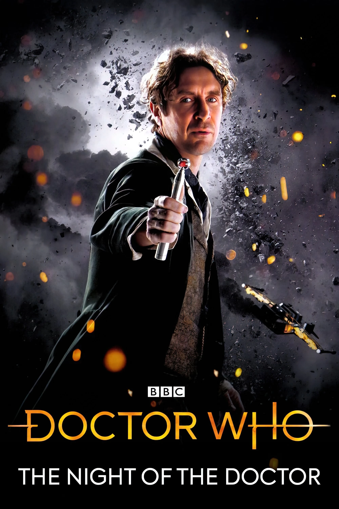
The night of the Doctor
Um mini-episódio que revela a verdade sobre o Médico de Guerra. O Doutor confronta seu passado e sua identidade em momento crisis de seu tempo de vida.
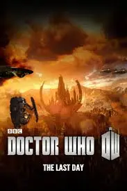
The last day
Um curto flashback à última noite de Gallifrey antes do “Granário” ser trancar. Momento emocional que revela segredos e relacionamentos cruciais.
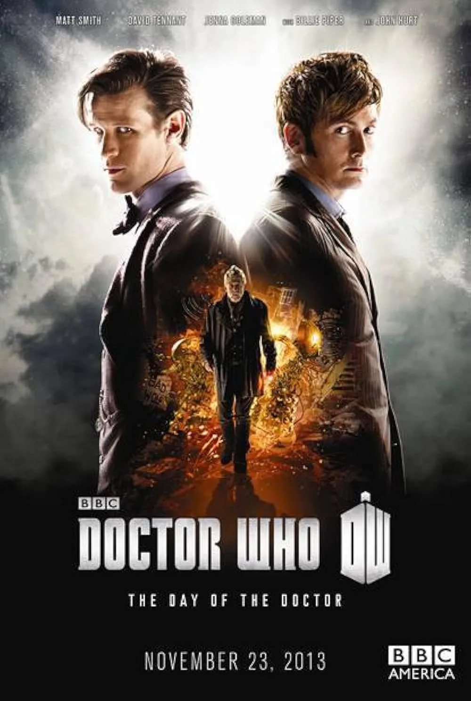
The day of the Doctor
O especial de 50º aniversário onde três encarnações do Doutor trabalham juntas. Uma épica corrida contra o tempo para salvar Gallifrey e seu destino.
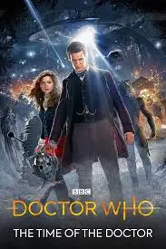
The time of the Doctor
O Undecimo Doutor enfrenta seu fim junto a Clara enquanto a cidade de Christmas é sitiada. Despedida emotiva com regeneração transformadora e nova era.
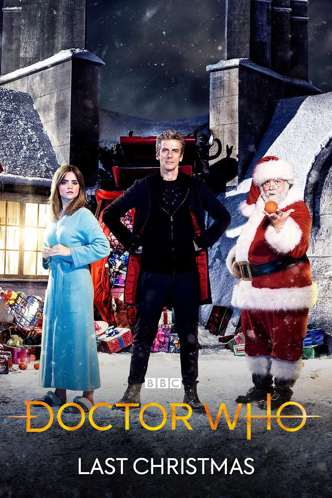
Last Christmas
O Décimo segundo Doutor acorda no pólo norte cercado por alienígenas e sonhos. Especial natalino que mescla realidade e ilusão com toques melancólicos.
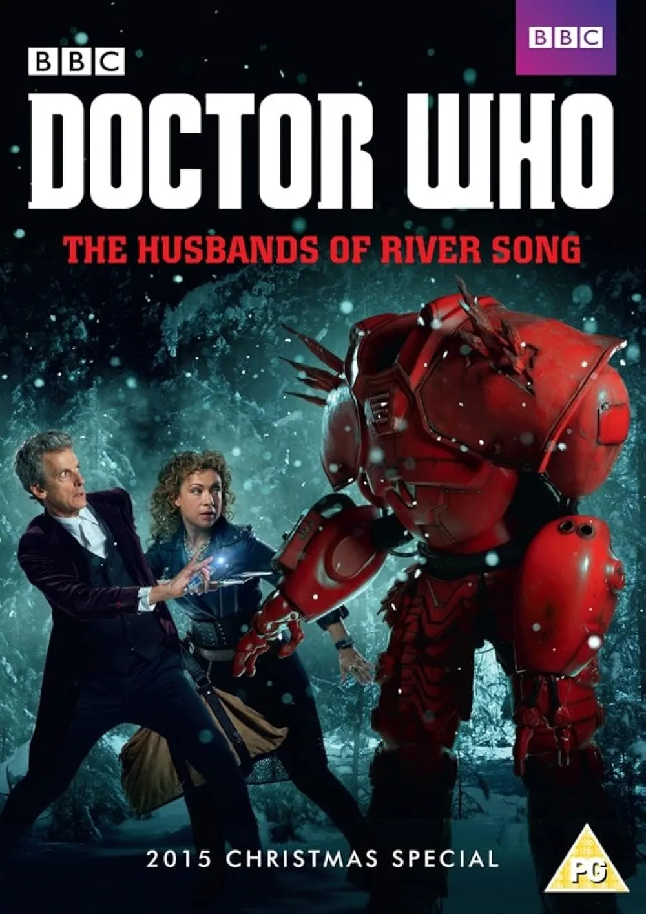
The husbands of River Song
O Doutor e River celebram em um navio luxuoso pelos asteroides. Encontro táctil e apaixonado que explora a relação complexa do casal atemporal.
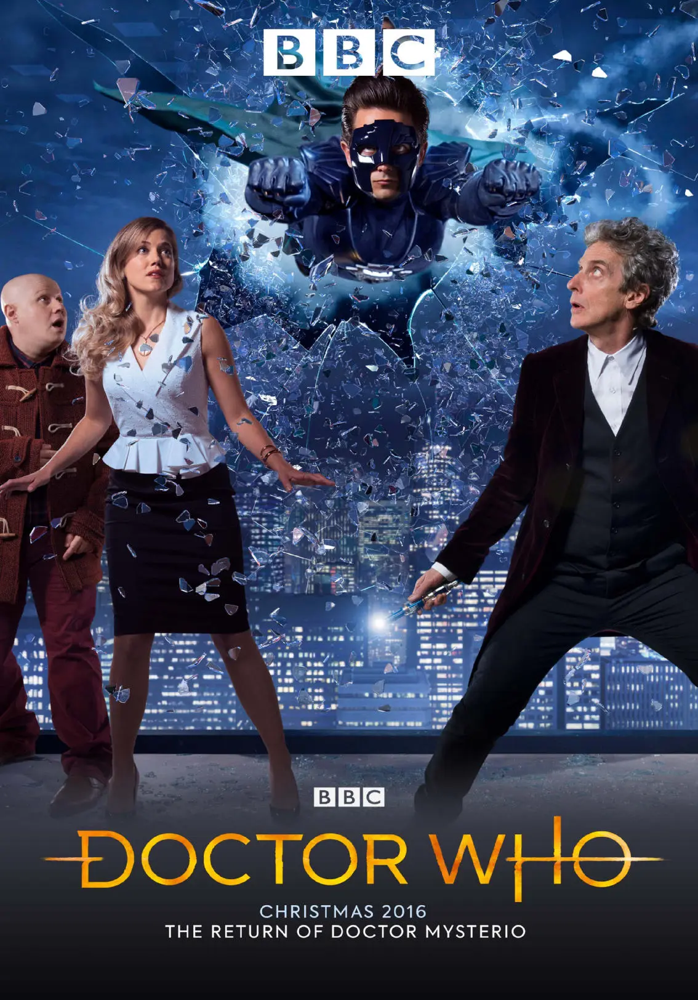
The return of Doctor Mysterio
Em Nova York de 1986, o Doutor encontra seu cómplice ganho superpoderes. Especial que rinde homenaçem aos heróis de quadrinhos com ação futurista.
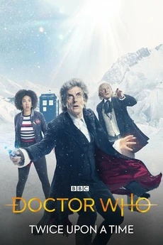
Twice Upon a Time
O Décimo segundo Doutor enfrenta seu final enquanto o Primeiro Doutor aparece. Despedida clássica que reúne passado e presente em regeneração esperada.
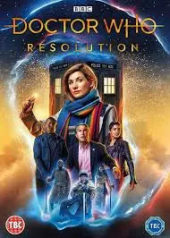
Resolution
Um Dalek fragmentado é descoberto e se reconstrói. O Doutor, Yaz e Ryan enfrentam a ameaça dialética clássica em batalha impiedosa pela sobrevivência humana.
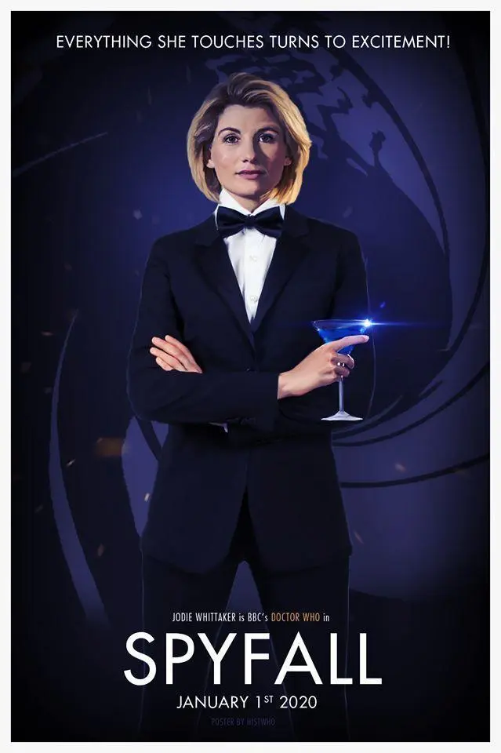
Spyfall
O Doutor e seus companheiros são transformados em agentes secretos. Primeira parte de uma trama que explora espionagem, identidade e revela ameаças cósmicas mascaradas.
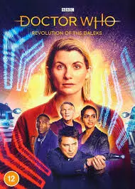
Revolution of the Daleks
Os Daleks retornam e ameaçam conquistar o mundo. O Doutor, Ryan e Yaz devem impedir que automátos sejam transformados em soldados dialéticos destrutivos.
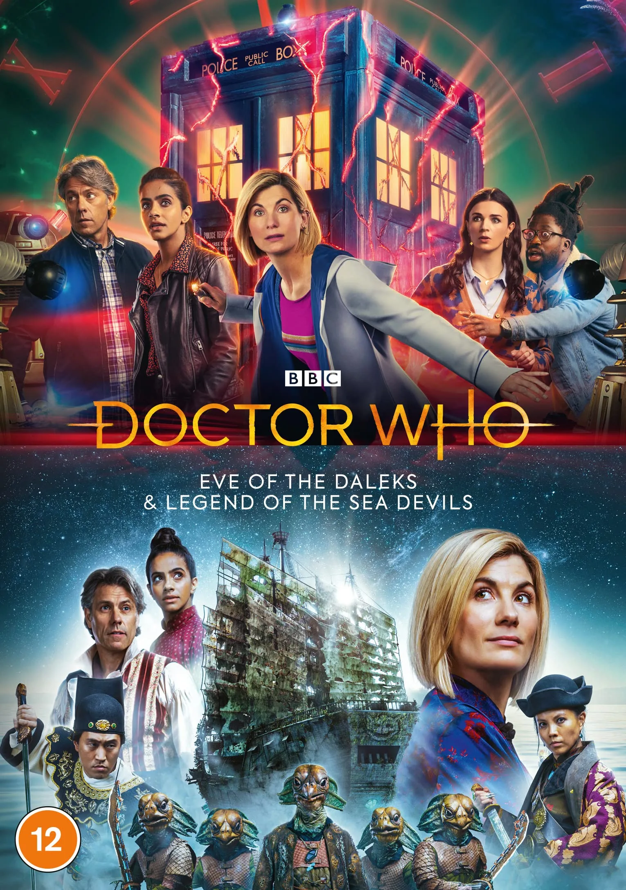
Eve of the Daleks
No ano 3000, o Doutor fica preso em láço temporal com Daleks e Sara. Especial que mistura ação, romance e horror da ameça eterna dos dialéticos.
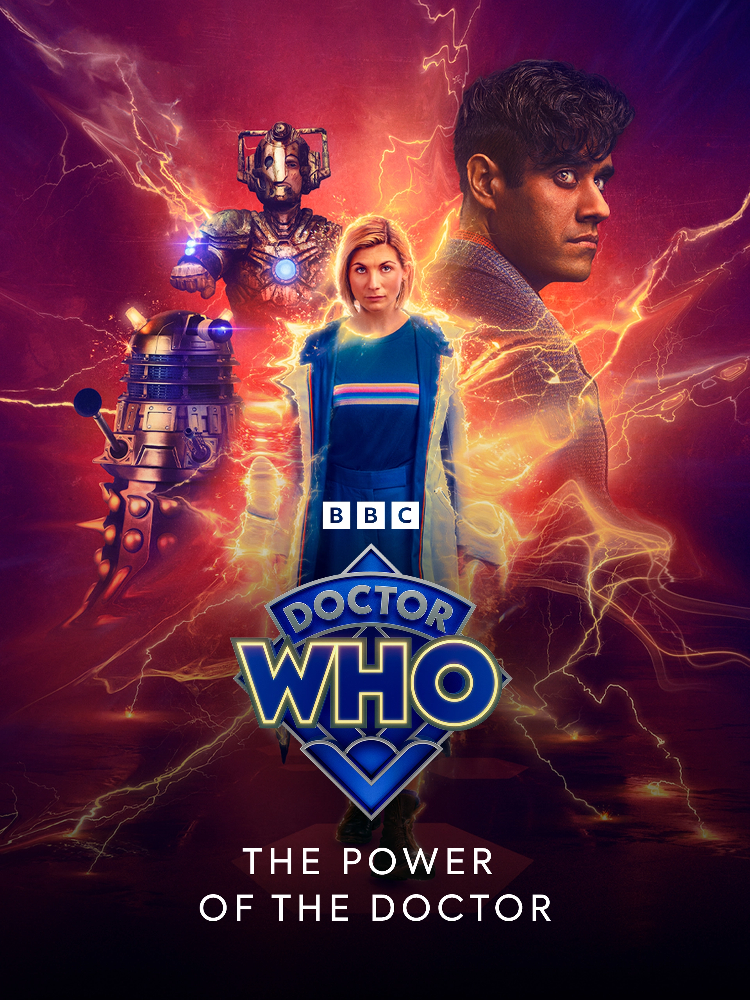
The power of the Doctor
Seu poder final confronta o Mestre e os Daleks. O Décimo terceiro Doutor enfrentar seu ponto de ruptura em especial que reformula tudo o que sabia.
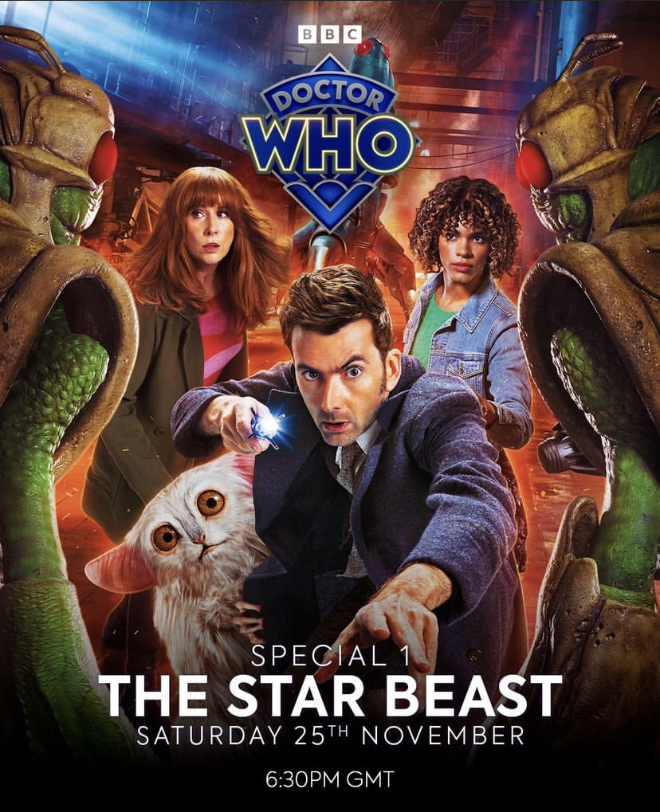
The star beast
O Doutor de 2023 surge enfrentando máquina nanotech alien. Ncuti Gatwa estreia como novo Doutor em empath extravagante cheia de esperança.
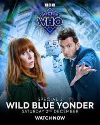
Wild blue yonder
O novo Doutor e Celebrimbor exploram nave estranha em vazio cósmico. Especial que reflete sobre solidariedade e conexão em isolamento.
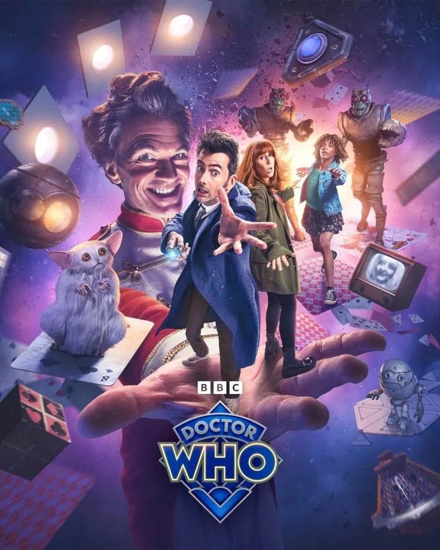
The Giggle
Uma anãlise futurista sobre como rirão e mémdia viralizam podem ameaçar humanidade. Especial que combina humor com reflexão profunda sobre tecnologia.
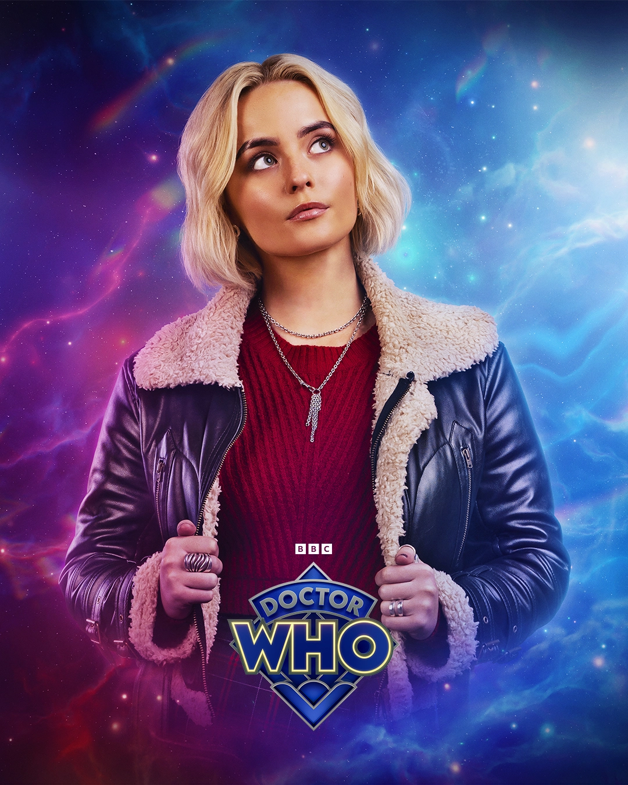
The church on Ruby Road
O primeiro episódio regular do novo Doutor. Na Londres atual, o Doutor conhece Ruby e ambos enfrentam mistério que revela segredos heréticos e pessoais.
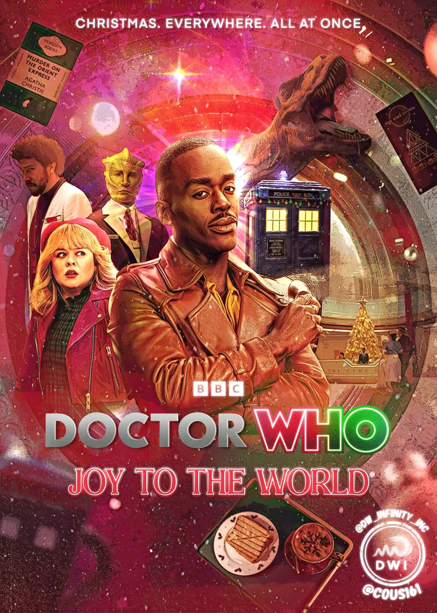
Joy to the world
O especial de Natal de 2024 com o novo Doutor. Mistura alegria festiva com ameaçadora ameaça cósmica que testa a bondade e compaixão do universo.